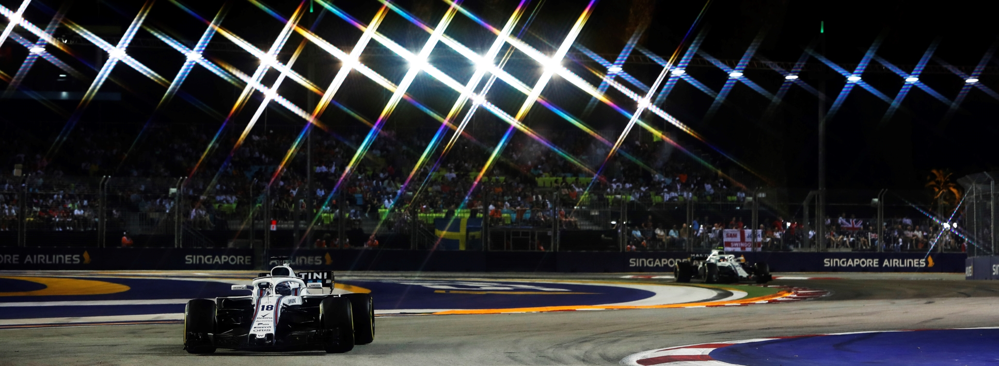
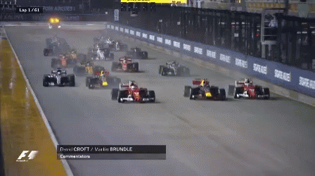
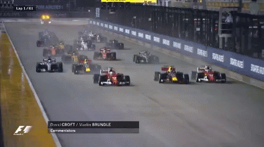

SIGNAPORIAN GRAND PRIX
Cicuit Length:
5,063 km (3.146 mi)
Turns:
23
Number of Laps:
61
First Grand Prix:
2008
Race Distance:
308.706 km
Signapore's race takes place in the Marina Bay. The track from the circuit is build around a massive hotel with over 2500 rooms.
And across Signapore live about 5,6 Million inhabitants. So far the record holder of this circuit is Kevin Magnussen.
This year (2021) the race will be on October 3. The fastest speed last year (2019) was measured at 276 km/h.
The most wins on this track are Mercedes and Ferarri with a tie, in total they've won 4 times on this track.
The driver with the most wins is Sebastian Vettel he has won 5 times.


Winners of the Signaporian GP
2020 - Sebastian Vettel
2019 - Lewis Hamilton
2018 - Lewis Hamilton
2017 - Valteri Bottas
2016 - Nico Rosberg
2015 - Sebastian Vettel
2014 - Lewis Hamilton
2013 - Sebastian Vettel
2012 - Sebastian Vettel
2011 - Sebastian Vettel
2010 - Fernando Alonso
2009 - Lewis Hamilton
2008 - Fernando Alonso
2007 - Not Held